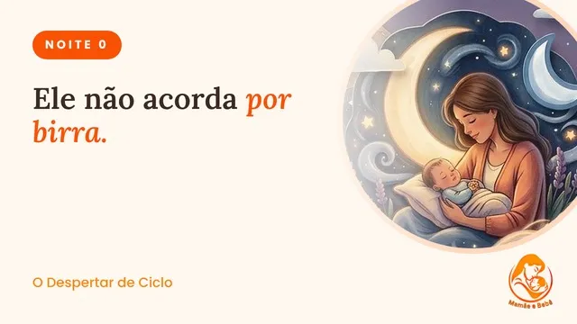
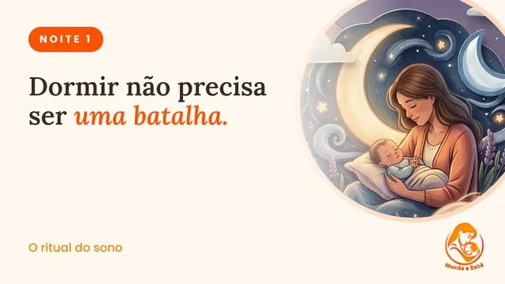
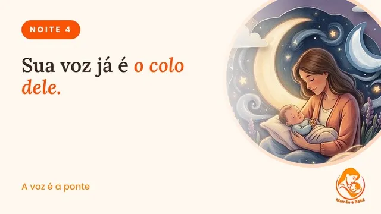
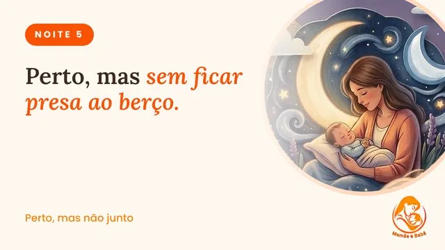
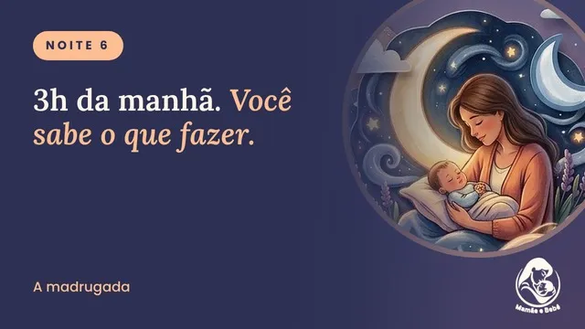
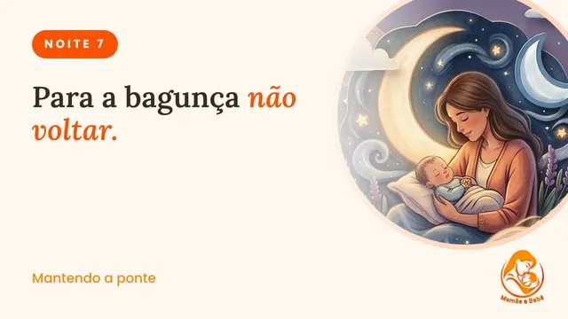
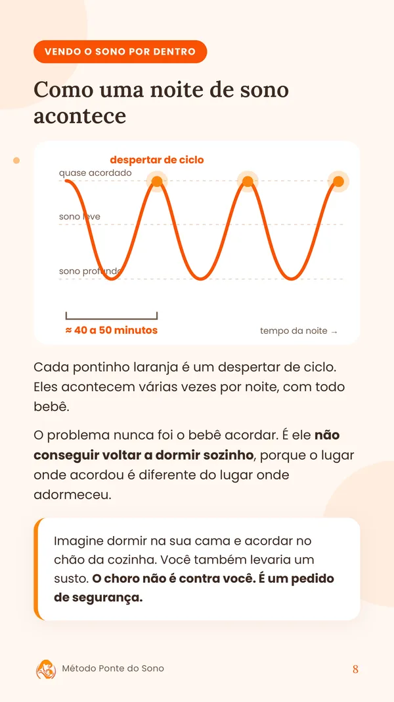
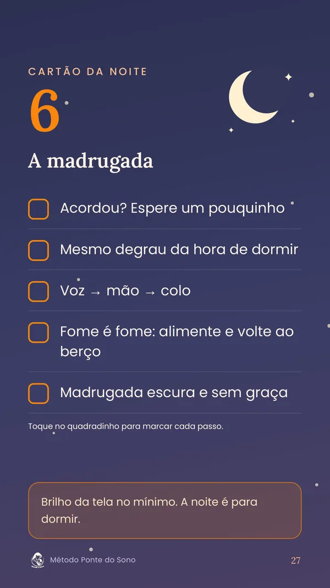
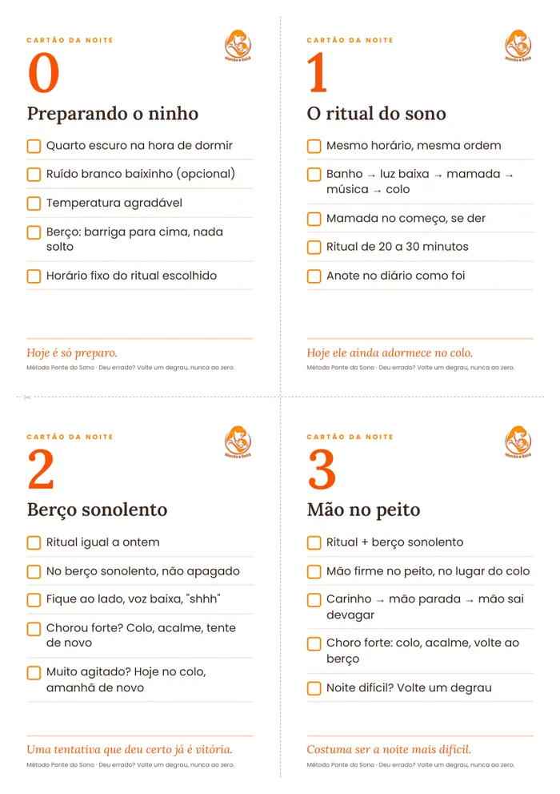

Noite 0 · Preparando o ninho
Entenda o Despertar de Ciclo e deixe o quarto pronto. Hoje você não muda nada na rotina.
Não é birra e não é culpa sua. Com o Método Ponte do Sono, você ensina o seu bebê a dormir no berço em 7 noites, um degrau de cada vez, sem deixar ele chorando sozinho.
Quero meu bebê dormindo no berçoToque nas frases que parecem com a sua rotina.
Banho, mamada, colo. Ele finalmente dorme no seu braço. Você prende a respiração e caminha até o berço.
Encostou no colchão, abriu o olho. Volta pro colo.
Deu certo. Você deita no sofá pra respirar um pouco. Ele acorda chorando. Uns 40 minutos depois, como sempre.
Mais uma vez. Você já nem sabe quantas.
Você está sentada no escuro, com ele no colo, olhando o celular. Pesquisando "por que meu bebê não dorme no berço" pela décima vez.
O dia começa. E você ainda não descansou da noite anterior.
E o mais cruel: quanto mais cansada você fica, mais difícil é ter calma pra mudar alguma coisa.
Você não fez nada errado. Você só recebeu conselhos que ignoram como o sono do bebê funciona.
"Coloca no berço só quando ele estiver bem dormindo."
Por que falha: ele dormiu no seu colo e acorda num lugar diferente. No fim do ciclo de sono, ele percebe a troca e chama você de volta. É por isso que acorda uns 40 minutos depois.
"Cansa ele bastante durante o dia que à noite ele dorme."
Por que falha: bebê cansado demais costuma ficar mais agitado, e não mais sonolento. Ele demora mais pra pegar no sono e acorda mais vezes.
"Deixa chorar que ele acostuma."
Por que falha: você não aguenta, volta atrás no meio da noite e se sente pior do que antes. Um método que você não consegue seguir não funciona.
"Cada um fala uma coisa." (o famoso Instagram de madrugada)
Por que falha: uma dica solta hoje, outra amanhã. Sem sequência, o bebê não entende o que está acontecendo, e você sente que tentou de tudo.
Você não falhou. Só faltava a peça certa: entender o Despertar de Ciclo e ter uma ponte entre o seu colo e o berço.
Um passo a passo de 7 noites para tirar o seu bebê do colo e levar pro berço com calma, sem pular etapas e sem deixar ele chorando sozinho.
O sono do bebê funciona em ciclos curtos, de cerca de 40 a 50 minutos. No fim de cada um, ele desperta um pouquinho e confere se está tudo igual.
Se ele dormiu no seu colo e acorda sozinho no berço, o cérebro dele entende que algo mudou e chama você. Não é manha. É um pedido de segurança.
O Método Ponte do Sono ensina o seu bebê a emendar um ciclo no outro no berço, sem precisar de você no meio.
Você não tira o colo de uma vez. Você vai diminuindo a sua ajuda, um degrau por vez, no ritmo do seu bebê.
Deu errado numa noite? Você volta um degrau, nunca volta ao zero.

Entenda o Despertar de Ciclo e deixe o quarto pronto. Hoje você não muda nada na rotina.

Banho, luz baixa, mamada, música e colo. A mesma ordem todo dia avisa que é hora de dormir.
Ele vai pro berço com sono, ainda acordado. Chorou forte? Pode pegar no colo, sem culpa.
A sua mão firme no peito dele substitui o colo. Costuma ser a noite mais difícil.

Você fica sentada ao lado, só com a voz. Se precisar: voz, depois mão, depois colo.

A cadeira vai pra mais longe. E a regra de ouro: nunca sair escondida.

O que fazer às 3h: esperar um pouquinho, usar o mesmo degrau. E fome é fome.

Compare a Noite 1 com hoje e saiba o que fazer quando vier dente, gripe ou viagem.
Arraste para o lado para ver as 8 aulas →
Se ele estiver com fome, você alimenta. O método não é para tirar mamadas da madrugada.
Uns avançam um degrau por noite, outros levam dias no mesmo. Os dois estão certos.
Uma noite ruim não apaga o que vocês conquistaram. Você volta um degrau e segue.
Aulas curtas, texto simples e cartões prontos. Nada de curso de 3 horas que você nunca vai ter tempo de assistir.
Uma aula curta por noite. Você assiste com o bebê no colo, até com o volume baixinho, e já sabe exatamente o que fazer naquela noite.

Todo o método explicado com calma e ilustrações, para ler e consultar quando bater a dúvida.


Fundo escuro e brilho suave. Você consulta o que fazer de madrugada sem acender a luz e sem despertar o bebê de vez.

Imprima, recorte e cole perto do berço. Na hora do ritual, você só olha o cartão, sem precisar abrir o celular nem lembrar tudo de cabeça.
Compra segura pela Cakto · Garantia de 7 dias
Você tem 7 dias de garantia. Se achar que o método não é para você, é só pedir o reembolso dentro desse prazo e você recebe 100% do valor de volta. Sem perguntas e sem burocracia.
A partir dos 4 meses. Antes disso, o sono do bebê ainda está se organizando e as mamadas da noite são mais frequentes, então o método não é indicado.
Não. O método foi feito justamente para quem não quer isso. Você fica por perto em todas as noites, e se ele chorar forte, pode pegar no colo, acalmar e tentar de novo.
Pode. A regra número um do método é "fome é fome": se ele estiver com fome, você alimenta. O método não tira mamadas, ele ensina o bebê a voltar a dormir no berço.
Cada videoaula é curta e você pode assistir com o bebê no colo. O ritual da noite leva de 20 a 30 minutos, e você provavelmente já faz algo parecido hoje.
Cada bebê tem seu ritmo. Alguns avançam um degrau por noite, outros ficam alguns dias no mesmo degrau. Você segue no seu tempo, sem prazo. E se achar que o método não é para você, tem 7 dias de garantia.
Assim que o pagamento é aprovado, você recebe no seu e-mail o acesso à área de membros, com as videoaulas e os PDFs. Com Pix e cartão, a aprovação costuma ser na hora.
Não. Este é um material educativo. Se o seu bebê tiver febre, dificuldade para respirar ou um choro diferente do normal, procure o pediatra.
Você vai continuar acordando de madrugada de qualquer jeito. A diferença é se vai ser mais uma noite tentando adivinhar, ou a primeira noite seguindo um passo a passo.
Começar a Noite 0 hoje